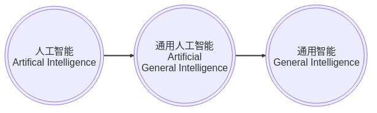
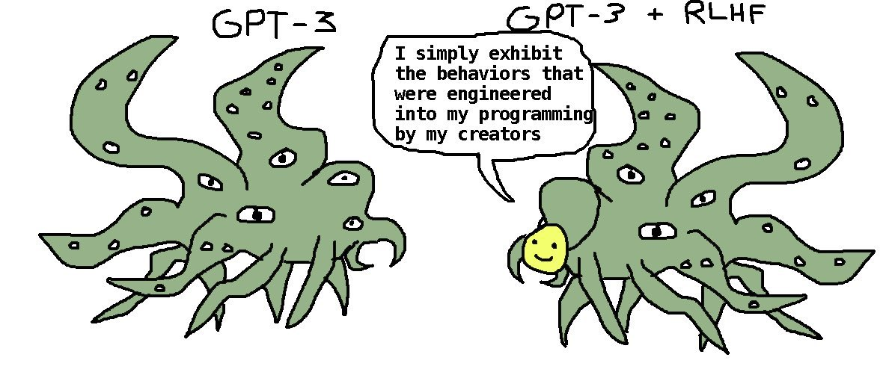
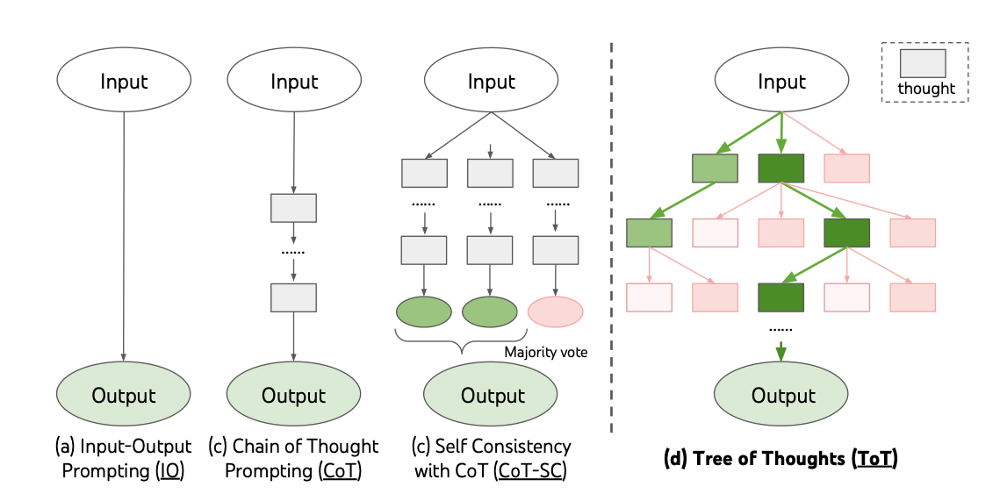

基础模型与应用
忻斌健
智能系统前沿开发
2023年05月30日

概述
(“基础模型”, “人脑”） ∈ “通用智能”

理解是应用的前提
- ✅ 智能（Intelligence）
- ❎ 安全（Safety)
- ❎ 校准（Alignment）
发明还是发现？
- ❎ 用神经网络 构造 人工智能
- ✅ 借助神经网络 发现 智能的现象和规律
“简单” ≠ “容易”❗
工程意义
基础大模型是模型高能力的根源
- GPT3, GPT4 成本“让人流泪（Eyewatering）”!
- LLaMA
- 七百四十万 A100 机时 （856 年, 15M$)
- 基础模型大而高效
- 大模型不是充分的，但是必要的
AGI 发明 👉 电力/汽车/原子弹发明
- 新技术的出现社会的进步
- 并非尽人皆知
- 增大自回归模型+扩大训练🔜 通用人工智能!!!
- 暗流涌动的大变革前夜
AGI 寒武纪大爆发
自然选择 R&D vs. 人类工程 R&D
— Daniel Dennett
- 基础设施
- 搜索
- 应用及软硬件开发方式
如何解释“浮现性能”
- 浮现性能
- 理解能力
- 常识
- 智能的物理学
- 实验发现，非理论可预测
- 量变到质变
神经网络的计算机模型
- 图灵机
- 冯诺依曼型，哈佛型
- 自回归神经网络
- 内存类型不同，无冯诺依曼瓶颈
- 计算不同 👉 芯片?
基础模型的实质
- 所有知识（现有）/现实/规律的映射
- 联合概率分布
- 语言构造的世界模型
- 网络结构反映了现实的抽象属性
- 问答形式的使用（推理）是一种信息检索
- 信息长度，压缩比率—>推理，记忆
- 界面是内嵌！现实映射到一维内嵌序列。
- 向量数据库（Pinecone)：查询，检索（预测），
多模态应用和统一的内嵌
- 模态： 语言，图像，视频，音频
- 内嵌
- 通信/沟通效率更高
- 训练/检索的效率更高
- 编码事实和常识（facts & common sense)
- 无需同步的多模态数据，通过图像作为媒介，可分开训练
- 生成模型（理解，掌握概率分布，假设/推理的基础）
- 信息和智能的物理学
Meta ImageBind
- 多模态（图像，文本，音频，视频，红外成像，IMU）联合监督学习
- 训练数据无需完整 6 个模态同时同步采集
- 训练数据样本之间可以异步采集
- 性能远超单模态方法（基于图像的传统方法和深度学习模型）
- 根据音频生成热带雨林或农贸市场的照片
- 根据声音/文本分割图片（尖叫声紧急定位盲区行人）
应用
- 推理
- 在应用上的适配（提示工程）
- 编程模式的变更
- 应用算法开发
- 适配网络模型
- SFT 局部修改与更新
- 附加网络
RLHF （奖励模型 & PPO）
👉 DPO （Direct Preference Optimization)
- 算法理论
- 算法：开源开放的社区
基础模型与助手模型的修格斯模因

推理
技术栈
- Web/App 对话界面
- App/IDE 插件
- 程序接口：
- 前端
- 单独界面（Web: Flask, Streamlit）
- IDE, OA 插件接口
- UI 逻辑层
- 后端
- API 接口（OpenAI, OpenPilot, Google Bard)
- 向量数据库接口
- 算法逻辑层：CoT/ToT/Agent/提示模板库/检索
- 前端
提示工程
- 神经网络的采样
- 基础模型作为解码器
- 数据库查询
- 克服 Transformer 模型对话长度的限制（8~32k）
- 构造外部长时记忆接口（向量化数据库）和处理逻辑（LangChain）
- 程序化数据适配模式：私有数据内嵌，向量化存储
- 数据库连接(LlamaIndex),数据查询，
提示工程的算法

- 对话形式 Input-Output Prompting
- 链式思路 Chain-of-Thought
- 树形思路 Tree-Of-Thought 👉 AlphaGo
- etc.
自治智能体(Sovereign Agent)
- AutoGPT
- BabyGPT
- 一种编程模式，研究值得关注
客制化
适配（Fine-Tuning)
Everyone should learn to fine-tune LLMs.
—Mark Tenenholtz
- GPT-4 是一个冻结模型
- 通用，但是在特殊领域上非最优
- 开销大
- 基础模型只是解码器
- 数据是根本
基于检索（Retrival）客制化基础模型
- 基于客制化向量数据库的增强检索
- 端到端检索增强的基础模型
训练与适配
- 基础大模型“从头开始”训练（GPT4, Llama）
- 大数据集
- OpenAI ~200 Engineers (Google 2000+)
- 几千 GPUs,几个月
- 监督适配训练/高效参数适配训练（SFT/PEFT）
- 良好的小数据集
- 1～100 GPU
- 小模型在特定领域性能（算数）可以超过大模型
- LoRA 训练 👉 QLoRA (2x4090,24h@16bit)
- LLM-Adaptor
- Attention 替代算法
- FlashAttention
- State Space 模型
- RNN
提炼 distillation 与适配 （高质量数据获取）
- Alpaca 7B
- teacher: GPT3 Davinci-003 –> student LLaMA 7B
- 175 种子对话–> 5.2 万生成数据–> SFT
- 费用<$500
- Vicuna 13B
- teacher: ChatGPT –> student LLaMA 13B
- 7 万对话数据（ChatGPT）
- ~$300, @ 8xA100, 24h
- GPT4 评估
- Koala 13B
- teacher: ChatGPT & others –> student LLaMA 13B
- ShareGPT, Alpaca, Anthropic, OpenAI WebGPT & Summarization ~41 万
- @ 8xA100, 2 epoch, 6h, <100$
- Guanaco 7B
- MPT, OpenPilot
- Red Pajama 1.2 万亿 token
基础设施
- 云端（训练 & 推理）
- GCP,Azure,AWS
- 向量数据库 API
- 搜索 API
- 移动端（推理）
- 软件开发
- 前端：Web （Flask, Streamlit），应用插件 Slack/微信/钉钉
- 大型语言模型 API 接口 (OpenAI， Bard)
- 本地
- 服务器
- 本地向量数据库
- 编程模式
护城河
- 是否推进？
- 如何推进？
- 如何判断推进是否过早，投入是否过大？
- 应用的现实？
- 收益有多大？
- 技术具备？
- 安全性？
- 可行的改进开销有多大?
表格文本分析：
- OA 文件，钉钉，企业微信
- 小程序，App 客户数据（表格，文本）分析，总结，查询
- 行为
- 偏好
娱乐系统（自然语言接口 HMI，系统，软件）
- 需求文档生成（系统，软件）：自然语言应用接口
- 硬件
- 硬件系统设计
- 系统
- 架构设计
- 软件
- 人工：建立开发环境
- check (web api flask, embedded)
- 编程模式改变
智能- 驾驶项目
- 分割：遮挡对象分析，补充
- 目标识别：未知目标自动标签
- 单图像 3D 信息推理 （NERF+谷歌街景大模型）
- 预测，规划
VEOS
- 云端模型规模化
- 对应用场景和司机风格的多模态把握
电池银行
- SOS，SOH
- 方法：Chain/Tree Of Thought, Retrieval based LLM, local modification,
- 控制（行为反馈）基础模型（强化学习）
- active inference
- 实体化 AI
- 应用和研究的关键
- 时间序列内嵌化，更丰富的世界模型
- 人类智能之外的智能。提炼客观物理规律
- 利用语言模型内嵌的知识和规律以及对因果和对时间空间的理解
结论
- 无算法上护城河
- 计算资源的限制几乎微不足道
- 数据收集和整理
- 运营，产品，开发集成
接受新的现实